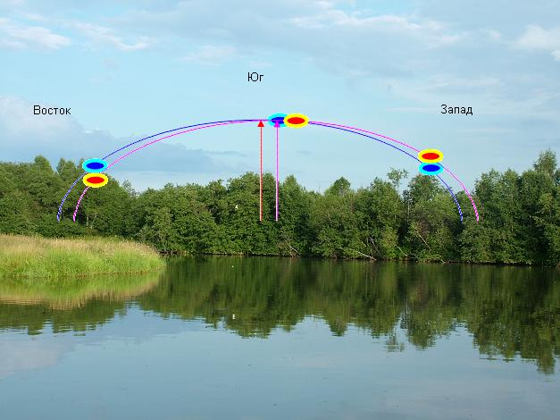
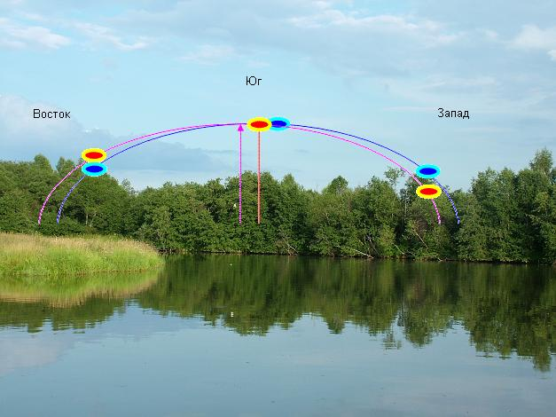
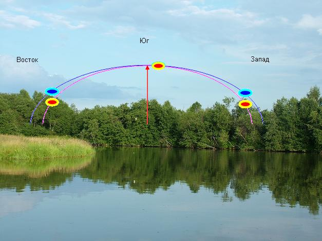
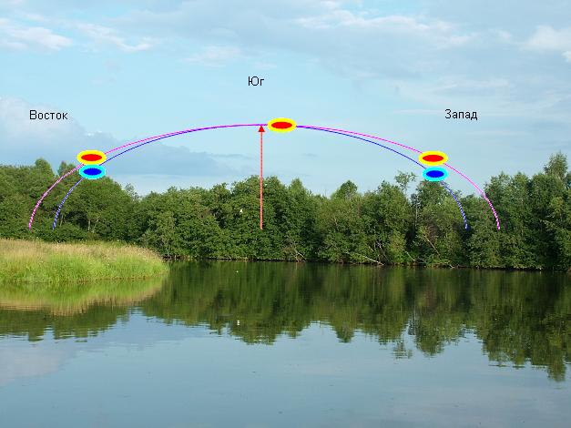

| Восточный спутник |
Западный спутник |
Что случилось? |
Что делать? |
|
| Ниже |
Ниже |
Угол элевации большой |
Направляем ресивером антенну на южный спутник. Уменьшаем угол элевации на мотоподвесе, ставим большую широту. Компенсируем увеличением угла деклинации на антене. |
| Ниже |
Выше |
Антенна смещена на восток |
Поворачиваем антенну вправо, на запад |
| Выше |
Ниже |
Антенна смещена на запад |
Поворачиваем антенну влево, на восток |
| Выше |
Выше |
Угол элевации маленький |
Направляем ресивером антенну на южный спутник. Увеличиваем угол элевации на мотоподвесе, ставим меньшую широту. Компенсируем уменьшением угла деклинации на антене. |
| Ровно |
Выше |
Опора завалилась на запад(вправо) |
Восстанавливаем вертикальность установки опоры. |
| Ровно |
Ниже |
Опора завалилась на восток(влево) |
Восстанавливаем вертикальность установки опоры. |
| Выше |
Ровно |
Опора завалилась на восток(влево) |
Восстанавливаем вертикальность установки опоры. |
| Ниже |
Ровно |
Опора завалилась на запад(вправо) |
Восстанавливаем вертикальность установки опоры. |
Траектория спутников синяя, дуга описываемая подвесом фиолетовая.

Неверное направление. Антена ушла на запад.

Неверное направление. Антена ушла на восток.

Большой угол элевации.

Маленький угол элевации.
 - Мотоподвес HH-90.
- Мотоподвес HH-90.
 - Конечно нужен sat finder. Без него никуда.
- Конечно нужен sat finder. Без него никуда.
 1. Готовим приемник.
Выбираем 3 спутника с сильным сигналом, по которым будем настраивать тарелку.
Один спутник должен как можно ближе к югу,
второй и третий соответственно на востоке и западе, те левее и правее.
Для московского региона можно выбрать следующие :
1. Готовим приемник.
Выбираем 3 спутника с сильным сигналом, по которым будем настраивать тарелку.
Один спутник должен как можно ближе к югу,
второй и третий соответственно на востоке и западе, те левее и правее.
Для московского региона можно выбрать следующие :